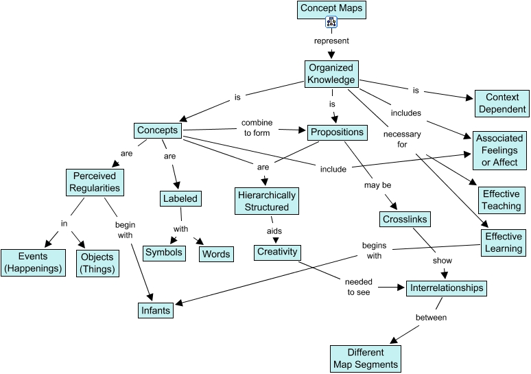

Concept maps are tools for organizing and representing knowledge. They include concepts, usually enclosed in circles or boxes of some type, and relationships are indicated by a connecting line between two concepts. Words on the line specify the relationship between the two concepts. Novak, J. D. (2004). Concept Maps and How To Use Them. Insight, 6(2), 15–16. DOI: 10.1002/inst.20046215.
A concept map is a diagram that highlights relationships between concepts and is the first step in creating an ontology. (Ontology). Each concept links to the next via linking phrases, and are displayed in a hierarchical display, with each main concept being larger and then divided into sub-concepts as pieces of the larger whole.
